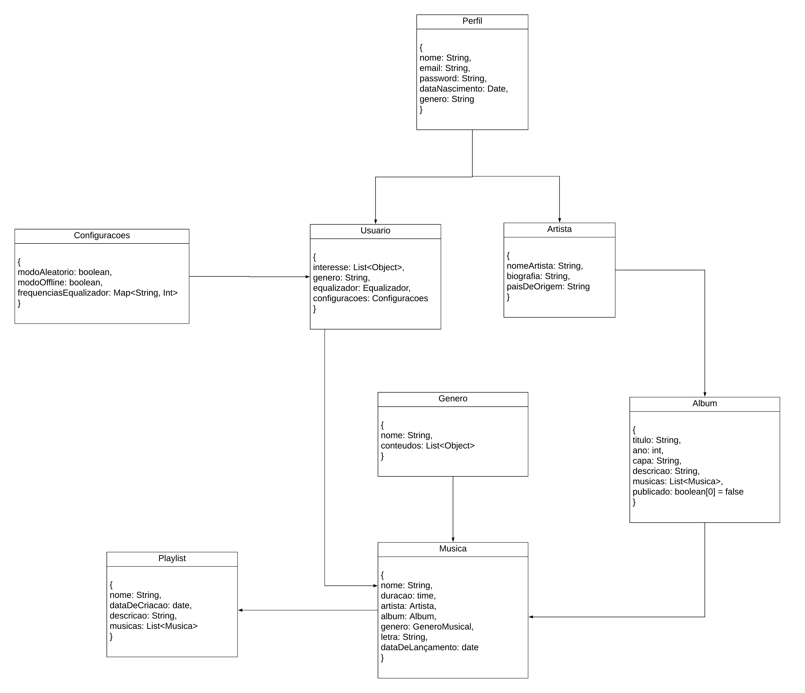

Visão de Dados
Introdução
A visão de dados lida com o armazenamento, a organização e a manipulação das informações dentro do sistema. Ela descreve como os dados são estruturados, acessados e processados, garantindo a integridade, segurança e desempenho adequados.
Essa visão é crucial para projetar uma arquitetura que suporte a gestão eficiente dos dados, permitindo consultas rápidas, escalabilidade e conformidade com as regulamentações vigentes.
Fonte: https://blog.infnet.com.br/arquitetura_software/principais-visoes-em-arquitetura-de-software/
No caso da utilização de um Banco de Dados Relacional a visão de dados pode ser um dcoumento de DER ou MER e caso o banco de dados seja não relacional como o caso deste grupo, a diagramação pode ser um artefato genérico.
Metodologia
Para o desenvolvimento do documento de visão de dados, primeiramente foi feito um estudo inicial de como deve ser esse documento, para o estudo foi utilizado video aulas e slides da professora Milene Serrano. Foi utilizado como base o diagrama de classe e foi utilizado o site Lucidchart.
Diagrama
Na figura 1 abaixo, contém a visão de dados.
Figura 1 - Visão de Dados  Autores: João Vítor
Referências Bibliográficas
Principais visões em Arquitetura de Software. Disponível em: https://blog.infnet.com.br/arquitetura_software/principais-visoes-em-arquitetura-de-software/. Acesso em: 12 agosto 2024.
Bibliográfia
Principais visões em Arquitetura de Software. Disponível em: https://blog.infnet.com.br/arquitetura_software/principais-visoes-em-arquitetura-de-software/. Acesso em: 05 agosto 2024. Artefato: Documento de Arquitetura de Software. Dispomivel em: https://www.cin.ufpe.br/~gta/rup-vc/core.base_rup/workproducts/rup_software_architecture_document_C367485C.html . Acesso em 6 agosto 2024.
Histórico de Versão
| Versão | Data | Descrição | Autores | Revisores |
|---|---|---|---|---|
| 1.0 | 05/08/2024 | Primeira versão | João Vítor | Luis Miranda (Link da revisão)[https://github.com/UnBArqDsw2024-1/2024.1_G2_My_Music/pull/84] |
| 1.1 | 12/08/2024 | Adicionando referências bibliográficas e correção de ortografia | João Vítor | Limírio Guimarães (Link da revisão)[https://github.com/UnBArqDsw2024-1/2024.1_G2_My_Music/pull/84], Carlos Eduardo Mendes de Mesquita, Link da revisão |